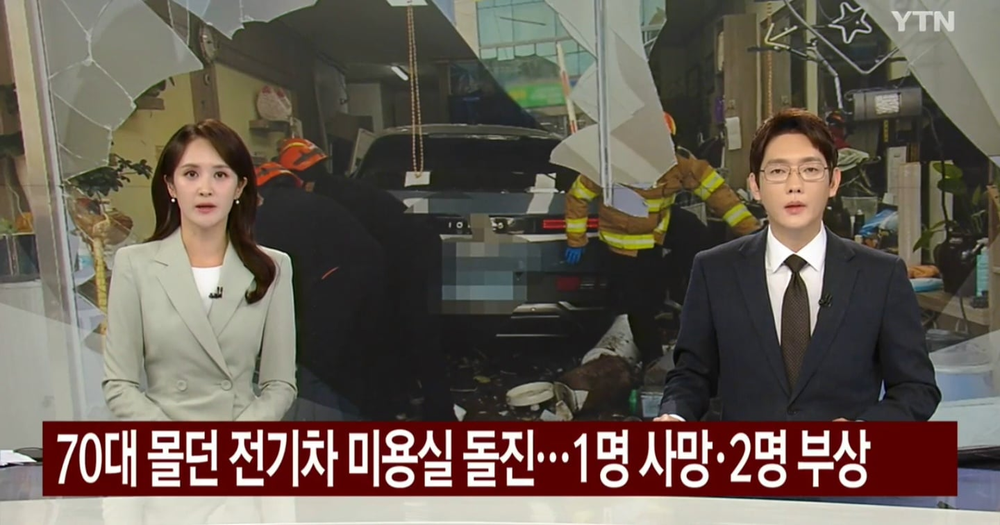

그런 주제에 페달 블랙박스는 달기 싫고, 페달 오조작 방지 장치도 달기 싫으면 내가 실수하면 그냥 아무나 걸리면 죽으라는 말이랑 똑같음
ㄷㄷㄷㄷ
운전 못하면 면허 반납해라 ㅅㅂ
난 솔직히 급발진이 백프로 없다 이런소린 안믿는데 이건 아무리봐도 쉴드칠 구석이 없어보이는데
0.00...01의 가능성도 포함해서 급발진이 없다고는 말 못함.
근데 브레이크 밟아도 나가는 급발진은 그냥 이 세상에 존재할 수가 없음
ㄷㄷㄷ
그냥 고령운전자는 차에 가속제한 거는 법 같은걸 만들어야 함
차 번호판 색깔도 정해서 주변이 알 수 있게 하고
29년부터인가 페달 오조작 방지장치 제조사에서 의무로 달아야 한다더라
나는 개인적으로 고령운전자 제재하자는 의견에는 동의 못하겠다.
서울이나 부산같이 교통인프라가 좋은 곳은 모르겠는데, 나 같이 천안 소도시에 사는 사람은 자차 아니면 어디 이동하기 쉽지 않거든.
그래서 80이든 90이든 나는 자차를 이용할 생각이다.
고령운전자 운전금지는 나도 반대임
급가속이 안되게끔 해야지
뒤져나가는 사람들은 생각 안하나
와 이제 전기차 급발진주장 사고 어케 막냐..
사람 많이 죽이겠는데
제발 65세이상 면허 박탈좀…
60세 이상은 비용받고 1년마다 검사해야한다
좆발진 주장 영상보면 거의 대부분 브레이크 타이밍에 쳐 날라가더라
누가 퀵핵으로 조작한듯
아따 요즘 넷러너 많네
왜항상 급발진기사는 6070 일까요?
극악한 자동차 제조사들이 60세 넘는 고객들에겐 급발진이 일어날 수 있는
썩은 부품들을 쓰는 라인을 따로 운용한다면 가능 ㅋㅋ
그냥 언론에서 그렇게 자꾸 뻐꾸기 날리는거야.
위에 통계 보면 40대에도 많어
급발진을 할 인지능력 저하는 고령층이 젤 많을 테고, 급발진을 주장해서 피해볼 게 하나도 없으니까. 급발진 아닌거 들키면 가중처벌 한다하면 확 줄을듯
앞으로 노인인구 훨씬 많아질거라 급발진 주장 사고가 늘면 늘었지 줄진 않을텐데
빨리 법으로 무슨 제도 마련좀 됐으면..
페달 오조작 방지 장치 의무화 절실하다
풀악셀 밟으면 되려 제동하는 장치 만들고 있다며 언제 적용함?
급발진특 맨날 고령층이 함ㅋㅋ
타이틀이 전기차다? = 현기차
70대 = 급발진
전기차는 주행 방법이 다름?? 왜 다른거지
뭐만하면 급발진이래 씹새끼가
더 말이 안되는건 한해 200건도 일어나지 않는 노인들의 급발진 주장사고로 인해서
다른 노령층 1050만명의 면허를 뺏어야한다는 주장임..
그것도 노년층만의 문제도 아님
2014년~2024년 6월, 급발진 주장 신고 456건
신고 운전자 연령 건수 비율
20대 7건 1.8%
30대 30건 7.6%
중장년
40대 80건 20.2%
50대 108건 27.3%
노령층
60대 122건 30.8%
70대 46건 11.6%
80대 3건 0.8%
연령 미확인 60건